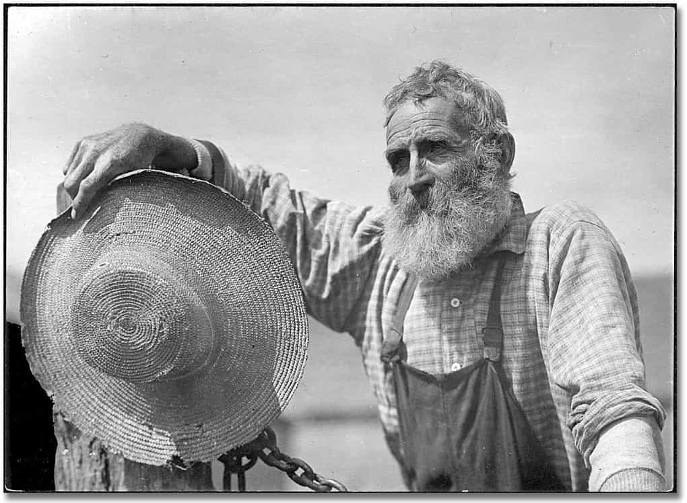
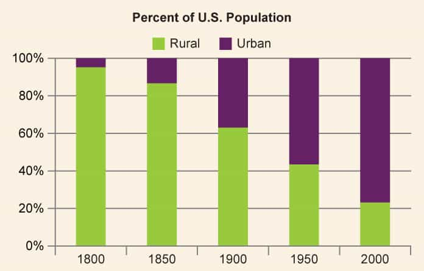
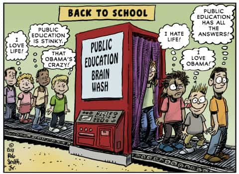
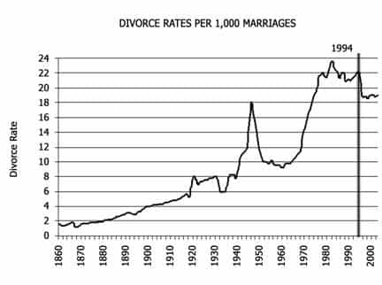

< < < Back
How America Went From Greatness To Irreversible Decadence – Return Of Kings
Any decently educated person knows that there are many things wrong with the world today; the disease of feminism is spreading at an alarming rate, moral standards have been sinking like an anvil dropped into the ocean, and purposeful lives are at an all-time low. Only a fool would reject these claims, and many try to.
This being said, the point of this article is not meant to prove that these problems exist; no amount of proof will convince a stubborn fool to shrug off his chains of ignorance. Rather, the point of this article is to explain how American culture went from valuing traditional marriages, morals, and art, to valuing novelty, degeneracy, and instant gratification.
Knowing that there are problems with our society is good. It is not, however, very difficult to see (assuming that you have the eyes to see it). Knowing exactly how our society got this way, however, is CRUCIAL, for the only ones who can stop this madness are the ones who know how degeneracy takes root, how it grows, and how it spreads.
I am here to help shed some light on these things, in the hopes that more will soon have the knowledge required to put an end to this terrible age that we live in.
The Beginnings
It all began in the early 1800’s. The USA was primarily an agrarian society; gender roles existed due to this. The men were tasked with doing the heavy lifting; they were to carry barrels of hay, brand the livestock, slaughter the animals for feast, and other typically masculine jobs. The women were to tend to the house; they were to sew what needed to be sewed, cook good meals for their husbands to replenish their strength with, raise children in an appropriate manner, and do other typically feminine jobs.
This model worked perfectly, as it played to each sex’s different biological and psychological abilities. Men, being physically stronger and more logical, were tasked with running the farm, dealing with the finances, and being involved in local politics. The women, being better at multi-tasking and being more emotionally intelligent, were tasked with cooking, cleaning, tending to the house, and raising the young ones.
![810075-wa-farmers[1]](wp-content/uploads/2016/03/810075-wa-farmers1.jpg)
The best person to teach a young boy is his father
Children spent an enormous amount of time with their parents, as not many children went to school—they didn’t need to. Their parents gave them a more practical education than any educational system could today.
The young boys learned how to be men by working alongside their fathers in the field and the young girls learned how to be women by helping their mothers with household tasks; parental wisdom was effectively passed down in such a way. As a man and his son toiled away in the fields, they likely had all sorts of conversations, covering a wide range of topics: how to treat girls, how to manage finances, local politics, philosophy, and their aspirations to name a few.
While a woman and her daughter were working in the house, they likely had conversations covering various topics as well: how to act around men, the best herbs to mix with certain dishes, and how to properly raise a child, for example.
This is how they learned. Not from some government-controlled, bureaucratic, politically correct organization, but rather, from their own parents’ experience. Which do you think has a child’s best interests at heart?
Then, at the end of the day, when the males were done working, they would come home from the fields. The children could then get a glimpse at how their parents interacted, thus learning about functional male/female relationships. They would notice their father’s gentleness when hugging his wife, his volunteering to carry heavier objects for her. They would notice their mother’s eagerness to serve her husband after a long, hard day in the fields, and the way that she let him take the lead in the relationship, trusting in his guidance.
Agrarian Societies Teach You Values
Working on a farm taught families discipline as well; it taught them that you reap what you sow, and it taught them to appreciate hard work. It didn’t matter how much book knowledge you have, how arrogant you are, how attractive you are…nothing mattered except knowing how to farm, and putting in hard work.
If a man was lazy, he would have a poor harvest and his family would either starve to death or come close. Working on a farm taught them the value of depending on yourself and having control over your life and circumstances.

A hard-working farmer like this would teach his son to be brave, strong, and honorable.
All was well; gender roles were in place, taxes were tremendously low due to almost nonexistent liberal attitudes, parents taught children morals, the government didn’t interfere too much in the peoples’ lives, and a strong sense of honor and purpose permeated the masses.
If it was discovered that a man was abusing his children, the men in the local town would have a stern talking to him, the implication being that if he continued, they would take whatever action was necessary to stop the abuse. The local patriarchy upheld order within its own domain – not some massive, centralized, bureaucratic entity, too crippled by its size to actually solve anything.
Enter The Industrial Age
This all started to change in the early-mid 1800’s; factories began sprouting up, and the US began to become more and more urban. It was gradual of course, but nonetheless it progressed.
Some families even sent their daughters away to factories; many viewed this as a horrible sacrilege against the traditional gender roles which had governed society for so long. Men were expected to work, not women! Women were delicate, emotional, and nurturing; they were supposed to work at home, doing womanly things.

Regardless, families were enticed by mediocre wages and promises of “educating” their daughters. Many caved and sent their daughters off; this began the dissolution of gender roles.
It Only Got Worse…
More and more men (and women) began to go to factories and move to urban areas; and eventually, the “only men work,” belief started to fade away. This move towards an urban civilization posed a massive problem, because young boys learned how to be men by working alongside their fathers in the fields, and young girls learned how to be women from working alongside their mothers.
In a factory, there is none of this. Many boys began to see their fathers less and less, and their mothers were tasked with teaching them how to be men. The problem, however, is that women can’t teach boys how to be men.
First Wave Feminism
By the 1860’s, factories were sprouting up everywhere, women and men were being sent off to factories, gender roles were slowly, but steadily dissolving, and the first wave of feminism was growing more popular by the minute. Women had successfully gained greater financial power, and now they wanted more.
Why? Well it’s quite simple, really. Women wanted to have their cake and eat it too. Women wanted to be treated like princesses, have men cater to them, and have men pay for all of their needs, but they also wanted all of the responsibility and power that came with being a man.
Women have always wanted this, since the beginning of time. I do not blame them for this, and neither should you. It is in a woman’s nature to manipulate and get what she wants, thus it is a man’s responsibility to maintain a strong frame and keep her in her place. So, instead of blaming women, blame the men for being too beta and naïve to realize that women should not wield the same power as men, as they are not biologically or psychologically capable of doing so.
Feminism Ran Its Course
Regardless of who to blame, however, the insidious seed of feminism was planted into the heads of women… and once it is planted, it cannot be undone.
Over the next 50 or so years, society became more and more urbanized. Men working at factories became far more common, and consequently young boys being raised without fathers did too. Many women even chose to go off to factories as well; many of their children were sent off to public school, as neither a man nor a woman was home to raise them.
Public Schools: The Catalyst That Destroys The Nuclear Family
“But Jon, isn’t school a good thing?” I can hear you ask.
Education is a good thing—public schools, however, are entirely different. I personally got a Catholic education, and am extremely grateful for it. Even though I’m not religious, my Catholic teachers instilled many great values into me.
I learned the value of discipline and hard work. I learned how to dress like a man (ladies wore skirts, boys wore slacks and a button down shirt and tie). I learned that traditional values aren’t “uncool,” like the media tries to convince our youth, but rather that they’re the only way to live a successful, fulfilling life.
As most ROK readers know, public schools nowadays are brainwashing factories, but some of you may also be quick to point out that it wasn’t always like this—and you’re right. This isn’t the point, however—whenever the education of an entire youth is put into a single, centralized power, it’s only a matter of time before the nation collapses.

The reasons for this are twofold: first, the bureaucracy always pushes an agenda onto the children, and second, it teaches the children to rebel against their parents. They no longer view their parents as guiding forces in their life, but rather as obstacles to being “cool,” and outdated fools who “just don’t get it.”
Okay, You’ve Made Your Point – But Just How Bad Was It?
By 1910, 72% of children attended public schools. On one hand, this was good, because the literacy rate improved vastly. On the other hand, however, this was horrible, because by having the government control what children are taught, they can easily control what children will come to think and believe. As I said earlier, this is where the brainwashing began.
Likewise, around the same time, many of the men in the USA were far more emasculated than the previous generation. The generation of young boys who went to public school during the early 1900’s were byproducts of first wave feminism, and the dissolution of the agrarian society (which remember, means that their fathers weren’t around to teach them how to be a man).
Around the same time, women began to push for more rights. Men were too occupied with work, distraught by cultural changes, and/or emasculated to stand up to their wives or do anything about it, so they just decided to appease them. They gave women the right to vote, rather than telling their wives to stop with the bullshit protesting and complaining.
Well Shit, Now Women Can Vote (2nd Wave Feminism)
The problem with this is that giving women the right to have ANY say in a country’s politics has been historically proven to be a terrible mistake, time and time again. Don’t believe me? Look at the Arab empire—in the 10th century women demanded to hold positions that were once exclusively reserved for men. Soon after women held positions as judges, professors, and lawyers, government and public order collapsed, leaving them vulnerable to foreign invasion. History is ridden with examples of how once women are given political power, everything goes to shit – look at Rome, Greece, Babylon, and lastly… the USA. (Source: The Fate of Empires).
Is it then a coincidence that suddenly, RIGHT after women were granted the right to vote, liberal policies such as the social security act were enacted soon thereafter? Is it a coincidence that there was a massive spike in the amount of liberalism in the country? Is it a coincidence that there was soon a huge increase in welfare?
It is not; as I said before, women are extremely emotional and thus easily swayed by emotional appeals. In fact, many women even elected Warren Harding (the election of 1920, just 1 year after women could vote) simply because “he was handsome.”
As the country began to become more and more industrialized, as more and more boys began to be deprived of male role models, and as more and more women went off to work, the country steadily became more and more liberal as women gained more wealth and power.
History has shown us that whenever women are given the right to vote, the country slowly, but surely becomes more socially and fiscally liberal until its demise. Again, if you don’t believe me look at the Roman Empire, the Roman Republic, Greece, the Ottoman Empire, and now the USA.
Enter Third Wave Feminism
This increase in social and fiscal liberalism led to the massive feminist movement of the 1960’s. However, the difference between this wave of feminism and the previous two was that this one wasn’t entirely grass-roots.
Yes, there was an enormous amount of anti-male sentiment present in the minds of women during this time period, however the third wave of feminism was catalyzed by the CIA and the elite. They funded women’s lib. Yes, that’s right. Here is where I will likely lose many of you, as few people understand just how insidious the US government and the elite are.
If you don’t believe me, however, maybe you will believe Aaron Russo, a political activist who ran for governor of the state of Nevada as a Republican in 1998. Aaron Russo has also made several libertarian leaning political documentaries and went on to run for the President of the United States in 2004 under the Libertarian party. Watch the video below.
Like Russo says, feminism was not some noble crusade. Rather, the elite wanted to be able to tax both men AND women. They wanted to break apart the nuclear family in order to push kids into public schools and start indoctrinating them.
This was the true motivation for third wave feminism. Of course, the elite and the politicians didn’t say that; that wouldn’t sound good to the public. So instead, they did what politicians always do. They spun a selfishly motivated grab for wealth and power to sound like a heroic endeavor.
Men Are Inferior, Women Don’t Need Them
Thus, third wave feminism was born in the 1960’s. Third wave feminism exposed young men to constant propaganda such as the phrase “A woman needs a man like a fish needs a bicycle,” and were frequently told about how men have been oppressing women for years. Consequently, young boys began to believe that there was almost something wrong with being a man, and they began emulating women.
The 1960’s was a crucial turning point in this game; look at your grandparents’ generation compared to the baby boomers. The differences are startling.
What caused the cultural revolt of the 60’s to be so much more powerful than any of the preceding cultural revolts? The mass media, of course. Before the mass media, when daddy was off working mommy would take responsibility for raising the kids, and even though she couldn’t raise her sons to be men, she could still at least do a decent job.
Even if both Mom and Dad were working, the kids would at least have to play with one another, read books, or find something intellectually challenging to keep them from getting bored.
The media changed all of that.
The Media Exacerbates Trends (Good Or Bad)
With a TV in the house, however, mommy could slack off and plop the kids in front of a central narrative machine to be brainwashed. And with the media being controlled by a few wealthy, elite spectators who don’t have the nation’s best interest at heart, obviously the media isn’t going to raise children for the better.
So with the mass media permeating nearly every aspect of peoples’ lives, they began to abandon traditional values in lieu of more “progressive” ones. The media began to teach children to rebel from a young age—and how can children learn from their parents if they are taught from the time that they’re two years old that their parents are old, stupid, uncool, and “just don’t understand”?
In addition to this, the youth became more accustomed to being passively entertained, as opposed to actively entertaining themselves (reading, playing games, etc.), which laid the foundation for future passive entertainment such as pornography and all forms of brain-rotting social media.
This spike in passive entertainment effectively started the journey towards mass stupidity; instead of young children actively exercising their brains through reading, learning a new skill, socializing, or playing sports, they simply slumped in front of a TV and took in whatever was given to them.
As children became more and more accustomed to being catered to, this became the culture of their generation. They wanted others to fix their problems, even if they were self-induced. Ever wonder why the baby boomer’s generation was dubbed the “Me” generation?
Thus, without many good parents teaching children ethics, with young men becoming increasingly beta, and with logical capabilities crashing through the floor, the propaganda on TV was a huge success.
The Liberal Machine
The massive liberal machine began to grow exponentially. First it was feminism, then it was the normalization of homosexuality, the normalization of divorce, the nuclear family began to fall apart, and here we are today, living in a “fem-topia.”

Things will only become worse, however – history has shown us the pattern that every great empire follows. Soon, pedophilia will be legalized (just like it was in Rome), and heterosexuality will become a taboo.
Soon it will be normal for children to be molested, bestiality will become far more common, AIDS rates will skyrocket, and straight white men will be persecuted. Soon, we will be forced to play along with the narrative lest we lose our jobs, and our families starve.
I realize that this is very depressing, but I always like to end with some practical advice…
Okay, So What Do We Do?
So then, if the trend cannot be reversed, what do the men with eyes to see this degeneracy do? The answer is simple—go elsewhere. Many men have caught onto this already—the “Great Exodus,” as it is dubbed in the manosphere is happening as we speak.
Men from all over the Western world are migrating to more hospitable lands in the east; lands where gender still means something, and isn’t a thing you can just decide to change.
We must “Ride the Tiger,” as Italian esotericist Julius Evola would say. He postulated that humanity, as a whole, is at a tipping point. We are experiencing such a rapid change, and a rapid dissolution of spirituality (and remember, he said this in the mid 1900’s), that there is no way we can fight it.
We must ride it out.
Here’s some tips to make the transition smooth…
Work On Creating Passive Income
This one is major. Within the next several decades, it will be very common for men to get fired for speaking up about anti-male propaganda, expressing distaste towards homosexuality, and valuing traditional gender roles. In fact, it’s already starting to happen, but it’s only going to get worse.
By creating passive income, you can say what you want without fear of poverty. Roosh can say what he wants, because this blog sustains him—in fact, it had to. Many of you might not know this, but Roosh was actually paranoid for years; he realized that he could be fired from his position as an industrial microbiologist at any moment if his employer found out about his blog.
Now, this doesn’t mean you have to create a blog, although it is a great way to earn some side revenue. You can also learn to day trade, start a business, monetize a YouTube channel, get into Amazon mercantilism, or publish eBooks.
I tweeted about buying stock in ABX on January 6th, and since then it’s almost doubled. I’ll be tweeting stock advice every now and then, so that neomasculine men can slowly gain more financial power in the world, but if you’re trying to make money investing I recommend a combination of reading Motley Fool, Seeking Alpha, and making predictions about where the world is headed (right now towards another collapse).
Buy Some Fucking Guns
You never know when the shit will hit the fan; it’s always good to be prepared. A fellow author wrote about this here – I think it’s a great introduction, and at the very least, it will give you an idea of what you’re looking for in a gun. In addition to this, it’s a good idea to create a bug out bag and learn some survivalist skills. You never know when you’ll have to use them.
Keep Your Goddamn Mouth Shut
Until you are completely financially independent, DO NOT risk getting fired. I am telling you from personal experience, it is not worth it. I used to try to convince everyone that feminism was cancer, but I quickly learned that most people will think you’re crazy, and the rest will try to get you fired or expelled (when I was in school).
If you find someone who seems to have a general sense of unease at the state of the world, you can try to slowly push him down the path that we’ve all gone down, that led us here. Be careful though, too much truth revealed at once will cause a severe backlash.
Improve Yourself
Even though the time we live in isn’t very great for living a fulfilling, honorable life, it’s still great for fucking tons of women.
Work on your game, lift weights, meditate, read, and find other like-minded men.
In Summary
In summary, there are several lessons that you should keep in mind:
- When women are given the right to vote, everything goes to shit.
- When a single centralized power controls the youth’s education, everything goes to shit.
- Without the nuclear family, everything goes to shit.
Every reader of ROK should know these things by heart—history has shown us time and time again that they are true. If you can convince others of these things, that’s great, but if they don’t want to listen, then don’t waste your time.
Work on improving yourself, and preparing yourself for the imminent collapse of the West, so that you can be prepared to make a difference when it will really count.
Read More: What Happened To Ashley?